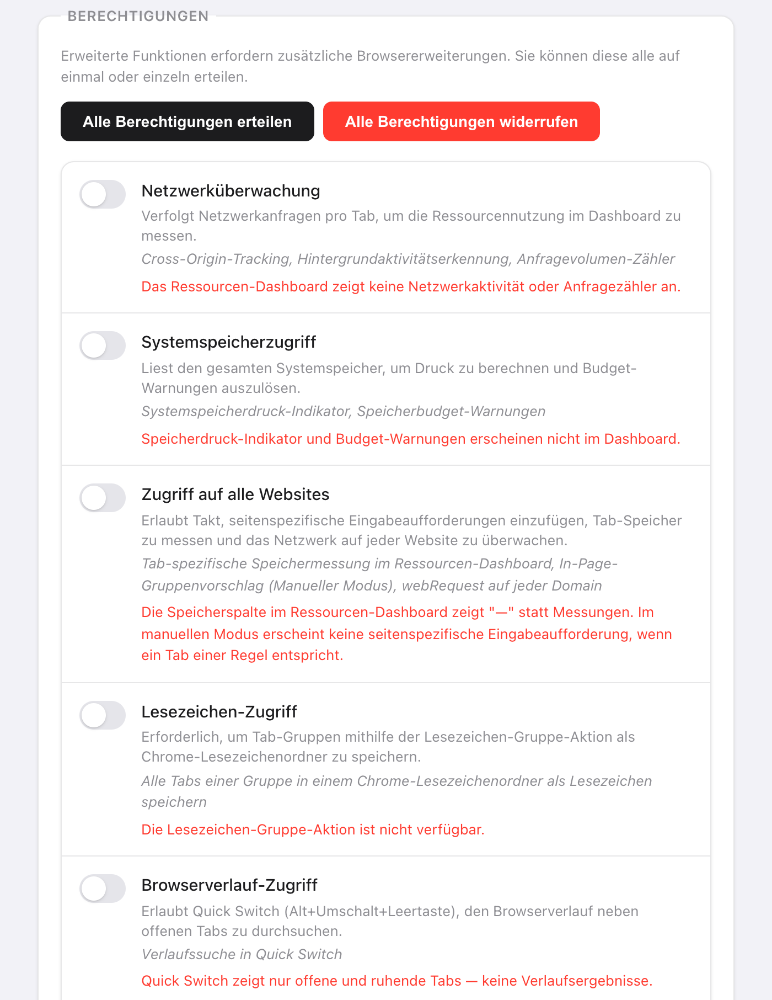

Kurz gesagt: Takt sendet keine Browserdaten irgendwohin. Es stellt zwei Arten von Netzwerkanfragen, und beide sind unten aufgeführt.
- Lizenzprüfung bei ExtensionPay: beim Start, alle 15 Minuten und wenn Sie das Popup öffnen.
- Google-Drive-Synchronisierung: nur, wenn Sie sie verbinden (Premium).
- Kein Konto, keine Analysen, keine Telemetrie. Die KI-Gruppierung läuft mit Chromes Modell auf dem Gerät.
Warum sollte ich einer Tab-Erweiterung überhaupt vertrauen?
Vielleicht tun Sie das nicht, und das ist vernünftig. 2021 hat Google The Great Suspender entfernt, eine Erweiterung zum Anhalten von Tabs, nachdem in einer Version, die nach dem Verkauf erschien, Schadcode aufgetaucht war. Die Nutzer hatten etwas Nützliches installiert, und ein Update hat es gegen sie gewendet.
Ein Tab-Manager muss Ihre Tab-URLs lesen, um zu funktionieren. Die sinnvollen Fragen lauten also: Was macht er damit, wer bekommt sie sonst noch, und kann sich das ändern, ohne dass Sie es merken? Der Rest dieser Seite beantwortet diese Fragen für Takt, mit Dingen, die Sie selbst prüfen können.
Was bleibt auf meinem Computer?
Alles, was Takt über Ihr Surfen weiß, liegt im eigenen Erweiterungsspeicher von Chrome:
- Regeln, Einstellungen und Profile in
chrome.storage.sync. - Sitzungen, hibernierte Tabs, Trefferzahlen der Regeln und die Domain-Historie hinter den Regelvorschlägen in
chrome.storage.local.
Eine Einschränkung: Ist die Chrome-Synchronisierung aktiv, kopiert Chrome selbst chrome.storage.sync über Ihr Google-Konto zwischen Ihren Geräten. Das ist eine Funktion von Chrome, kein Takt-Server.
Welche Server kontaktiert Takt?
| Dienst | Wann | Was er erhält |
|---|---|---|
| ExtensionPay (Lizenz) | Beim Start, alle 15 Minuten, wenn Sie das Popup öffnen | Einen zufälligen Lizenzschlüssel. Keine URLs, keine Tab-Daten. |
| Google Drive API | Nur nachdem Sie Drive verbunden haben. Alle 15 Minuten, wenn die automatische Synchronisierung aktiv ist. | Die eigenen Synchronisierungsdateien von Takt, im versteckten App-Ordner von Drive |
| Google-Anmeldung | Wenn Sie Drive verbinden oder trennen | Beim Verbinden eine Abfrage Ihrer E-Mail-Adresse, um anzuzeigen, welches Konto verknüpft ist. Beim Trennen eine Anfrage, das Zugriffstoken von Takt zu widerrufen. |
Ein Detail, das man kennen sollte: ExtensionPay erzeugt diesen Lizenzschlüssel erst, wenn Sie zum ersten Mal die Upgrade- oder Anmeldeseite öffnen. Bis dahin findet die Prüfung keinen Schlüssel und endet ohne Netzwerkanfrage.
Die Drive-Synchronisierung nutzt den Bereich drive.appdata. Takt kann seine eigenen Dateien in einem versteckten Ordner lesen und schreiben und sieht den Rest Ihres Drive nicht. Die Ordner-Synchronisierung, die andere Backup-Option, schreibt in einen Ordner Ihrer Wahl; das Hochladen übernimmt Ihr eigener Cloud-Client.
Zwei weitere Dinge öffnen eine Webseite, und keines davon ist eine Anfrage im Hintergrund. Der Bewertungslink öffnet den Chrome Web Store, wenn Sie darauf klicken. Und wenn Sie deinstallieren, öffnet Chrome eine Feedback-Seite, die grobe Werte wie Version, Plan und einen Bereich für die Anzahl der Regeln erhält. Die Datenschutzrichtlinie nennt jeden Wert.
Läuft die KI-Gruppierung auf dem Gerät?
Ja. Die Gruppierung per KI nutzt Chromes integriertes Sprachmodell, das auf Ihrem Computer läuft. Chrome lädt das Modell bei der ersten Nutzung herunter, und Takt zeigt den Fortschritt. Ist das Modell nicht verfügbar, gruppiert Takt stattdessen nach Ähnlichkeit, ebenfalls lokal.
Ganz genau, was das Modell sieht: den Titel jedes Tabs und, bei Seiten, die Chrome Takt lesen lässt (das ermöglicht der Zugriff auf alle Websites), die ersten 500 Zeichen des sichtbaren Texts. Dieser Text geht an das Modell auf Ihrem Computer und nirgendwo sonst hin. Es gibt keinen Takt-Server, an den er gehen könnte.
Chromes eigene KI-Funktion „Organize Similar Tabs“, die manche Anleitungen noch erwähnen, lief in der Cloud, nicht auf Ihrem Gerät, und Google hat sie 2025 eingestellt. Wenn Sie nur ab und zu aufräumen möchten, reichen vielleicht Chromes Tab-Gruppen und „Memory Saver“, ganz ohne Erweiterung. Takt ist für dauerhafte Regeln, das Blockieren von Duplikaten, Hibernierung und Sitzungen obendrauf.
Wozu fragt Takt nach jeder Berechtigung?
Acht Berechtigungen werden bei der Installation erteilt. Jede gehört zu einer Funktion:
| Berechtigung | Wozu |
|---|---|
tabs | Tab-URLs und -Titel lesen, um Ihre Regeln abzugleichen |
tabGroups | Gruppen anlegen, benennen, einfärben und einklappen |
activeTab | Auf den aktuellen Tab einwirken, wenn Sie im Popup klicken |
storage | Regeln, Einstellungen, Sitzungen speichern |
scripting | Den Duplikat-Hinweis und das Quick-Switch-Overlay anzeigen; Seitentext für die KI-Gruppierung lesen |
contextMenus | Rechtsklick-Einträge wie Diesen Tab hibernieren |
notifications | Hinweise wie Warnungen zum Speicherbudget |
alarms | Zeitgesteuerte Aufgaben: automatische Hibernierung, Profil-Zeitpläne, die Lizenzprüfung |
Alles andere ist optional und aus, bis eine Funktion es braucht: webRequest, system.memory und der Zugriff auf alle Websites für das Ressourcen-Dashboard (der Zugriff auf alle Websites lässt außerdem die KI-Gruppierung Seitentext lesen), bookmarks für die Aktion Lesezeichen-Gruppe, history für die Suche in Quick Switch und für Regelvorschläge, downloads für die Suche in Quick Switch, identity für die Drive-Synchronisierung. Jede davon können Sie unter Settings widerrufen, oder Sie stellen ein, dass Takt nie danach fragt.

Wie kann ich das selbst prüfen?
- Öffnen Sie
chrome://extensionsund schalten Sie den Entwicklermodus ein. - Klicken Sie auf der Karte von Takt neben „Ansichten überprüfen“ auf Service Worker.
- Öffnen Sie den Tab Netzwerk und surfen Sie weiter. Sie sollten nur die Anfragen aus der Tabelle oben sehen, dazu Takt, das seine eigenen
chrome-extension://-Dateien liest.
Die Content Security Policy von Takt lautet script-src 'self'. Es kann nur Code ausführen, der in der Erweiterung enthalten ist, und deshalb keinen neuen Code von einem Server holen. Jede Verhaltensänderung muss als neue Version im Chrome Web Store erscheinen.
Wovor Sie das nicht schützt
- Den Updates müssen Sie weiterhin vertrauen. Chrome installiert neue Versionen automatisch. Keine Richtlinie kann verhindern, dass sich eine künftige Version ändert; am Netzwerk-Tab würden Sie es merken.
- ExtensionPay ist ein Drittanbieter. Sobald ein Lizenzschlüssel existiert, sieht ExtensionPay den Schlüssel und, wie jeder Server, Ihre IP-Adresse.
- Die Berechtigung
tabsist weitreichend. Takt kann URL und Titel jedes Tabs lesen. So funktionieren Regeln. Entscheidend ist, dass die Daten auf dem Computer bleiben.
Ein Tab-Manager, der nirgendwohin nach Hause telefoniert.
Zu Chrome hinzufügen — kostenlosHäufige Fragen
Sendet Takt meinen Browserverlauf oder meine Tab-URLs irgendwohin?
Nein. Regeln, Abgleich, Sitzungen, hibernierte Tabs und Vorschläge bleiben im Speicher von Chrome auf Ihrem Computer. Die einzigen Daten, die ihn verlassen, sind die Lizenzprüfung und, wenn Sie sie verbinden, die Synchronisierungsdateien von Takt in Ihrem eigenen Google Drive.
Braucht Takt ein Konto?
Nein. Es gibt kein Takt-Konto. Premium ($3/Monat oder $30/Jahr) wird über ExtensionPay bezahlt, das Stripe nutzt.
Findet die KI-Gruppierung von Takt in der Cloud statt?
Nein. Sie nutzt Chromes integriertes Modell auf dem Gerät. Ohne das Modell gruppiert Takt nach Ähnlichkeit, ebenfalls lokal.
Warum braucht Takt die Berechtigung tabs?
Um URL und Titel jedes Tabs zu lesen und mit Ihren Regeln abzugleichen. Der Abgleich findet im Browser statt; nichts wird übertragen.
Was ist anders als bei The Great Suspender?
The Great Suspender wurde 2021 entfernt, nachdem in einer Version, die nach dem Verkauf erschien, Schadcode aufgetaucht war. Die Content Security Policy von Takt erlaubt nur mitgelieferte Skripte, deshalb muss jede Änderung als neue Version im Chrome Web Store erscheinen, die Sie prüfen können.